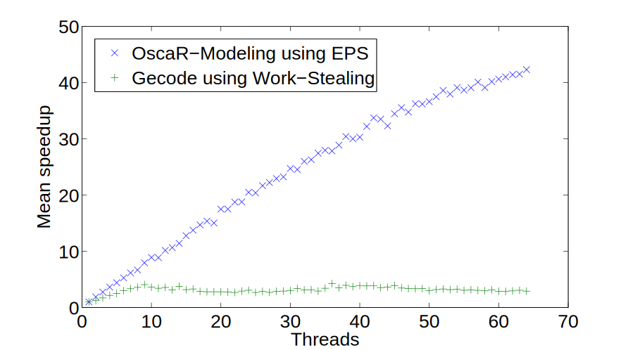

OscaR-Modeling and Embarassingly Parallel Search
Guillaume DervalFebruary 3rd 2017
Contents
- Embarrassingly Parallel Search
- OscaR-Modeling
- Performances
- Future work
Embarrassingly Parallel Search
How to parallelize a CP solver?Parallelizing CP
Common methods:
- Portfolio search
- Static decomposition
- Work-stealing
Portfolio search
- Start multiple solver concurrently
- With different search heuristics
- Limited scalability
Static Decomposition
- Divide the initial problem
- S.t. each worker has a subproblem
- Decomposing is hard
Work-Stealing
Idle workers "steals" work
Very invasive, difficult to scale above ~50 workers
Embarassingly Parallel Search (EPS)
- Extension of Static Decomposition
- Numerous subproblems
- Static or dynamic assignation to worker
- More subproblems = better balancing
- Non-invasive
Decompositions
Given a CSP P <$\mathcal{X},\mathcal{D},\mathcal{C}$>:
- $\mathcal{X}$ being the variables in the CSP
- $\mathcal{D}$ contains the domains of these variables
- $\mathcal{C}$ is the list of constraints
A decomposition is a process that produces a list of CSPs, called subproblems $s_1, s_2, ..., s_n$, such that
$$\bigcup_{i=1}^n s_i = P$$Decompositions (cont.)
Moreover, we want that:- $s_i \cap s_j = \emptyset$ if $i\neq j$ (subproblems do not overlap)
- $s_i \neq \emptyset$ after propagation (subproblems are not trivial)
- Solving time for each subproblems are in the same order of magnitude
Decomposition strategies (1)
Domain splitting
- Take some variables $x_1,x_2,...,x_m$
- For each possible combination of assignation (or splitting, ...), create a subproblem $<\mathcal{X},\mathcal{D}', \mathcal{C}>$
- Keep those that are not-trivial
Decomposition strategies (2)
Node splitting
- Use a search heuristic
- Go down in the search tree until you have enough nodes
- Subproblems are in the form of $$s_i=<\mathcal{X},\mathcal{D},\mathcal{C}+H_i>$$ where $H_i$ is a list of added constraints
Basic domain splitting (IDDFS)
xs <- list of variables
for(i <- 0 until xs.length) {
decomp <- generate(xs[0], ..., xs[i])
if(decomp.length >= n)
return decomp
}
return decomp
Results
Implicit assumption: each node at the same height are $\approx$ the same space size
Cartesian-product-based iterative refinement (CPIR)
An example of node-splitting strategy
q <- new max-Priority Queue
q.add(cartProd(P), P)
while(q.size != n) {
sp <- q.poll()
for(c <- sp.children)
q.add(cartProd(c), c)
}
return content of q
Results
OscaR-Modeling
OscaR is a Scala toolkit for solving Operations Research problems.
It includes tools to solve a great variety of problems:
- Constraint Programming (CP)
- Linear (Integer) Programming (LP, MIP)
- Constraint-Based Local Search (CBLS)
- ...
Implementing EPS in OscaR-CP
Difficult to impossible.
- Variables in OscaR-CP are always concretized.
- Constraint definition are lost upon instantiation
- No serialization
- ...
OscaR-CP is a "low-level" solver, not a modelisation language!
Main motivation: simple serialization of models over the network.
$\rightarrow$ implementation on OscaR-CP
Features of OscaR-Modeling
- "Solver-agnostic"
- Dichotomy model/solver
- DSL nearly equivalent as OscaR-CP
- Algebra
- Presolving capabilities
- Model Tree / Model Operators
- Reusable searches
- Parallel Solving with EPS
- Distributed Solving with EPS
Currently accessible solvers/model types

In the hypothetical future
Model Tree, Model Operators
Code time!
SEND+MORE=MONEY model
class SendMoreMoney extends ModelDeclaration {
val all = Array.fill(8)(IntVar(0, 9))
val Array(s, e, n, d, m, o, r, y) = all
//SEND, MORE and MONEY must no start with a 0
add(s > 0)
add(m > 0)
//All the variables must have a different value
add(AllDifferent(all))
//And we have the main constraint
add( s*1000 + e*100 + n*10 + d +
m*1000 + o*100 + r*10 + e ===
m*10000 + o*1000 + n*100 + e*10 + y)
}
SEND+MORE=MONEY in MIP
object MySolver extends SolverApp[String] with MIPSolving {
override val modelDeclaration = new SendMoreMoney()
//Solution handler
onSolution { modelDeclaration.all.map(_.min).mkString(",") }
//Display first solution
println(solve().head)
}
$ java MySolver
9,5,6,7,1,0,8,2
SEND+MORE=MONEY in MIP and CP
object MySolver extends SolverApp[String] with MIPSolving
with SequentialCPSolving {
override val modelDeclaration = new SendMoreMoney()
//Solution handler
onSolution { modelDeclaration.all.map(_.min).mkString(",") }
//Add a CP search
setCPSearch(Branchings.binaryStatic(modelDeclaration.all))
//Display first solution
println(solve().head)
}
$ java MySolver mip
9,5,6,7,1,0,8,2
$ java MySolver cp
9,5,6,7,1,0,8,2
Now, in parallel
object MySolver extends SolverApp[String] with MIPSolving
with SequentialCPSolving
with ParallelCPSolving {
override val modelDeclaration = new SendMoreMoney()
val vars = modelDeclaration.all
//Add a CP search
setCPSearch(Branchings.binaryStatic(vars))
//Add an EPS decomposition
setCPDecompositionStrategy(new CartProdRefinement(vars, Branchings.binaryStatic(vars)))
//Solution handler
onSolution { vars.map(_.min).mkString(",") }
//Display first solution
println(solve().head)
}
$ java MySolver parallel-cp -n 8
# some solver output
9,5,6,7,1,0,8,2
Performance
OscaR-Modeling with EPS
Golomb ruler - 13 - EPS vs Work-Stealing

16-Queens - EPS vs Work-Stealing
QAP - 11 - 256 workers
Golomb ruler - 14 - 1024 workers
Future work
EPS offers new possibilities
A lot of open questions:- What is the importance of the decomposition strategy?
- In what order should we evaluate subproblems?
- How can we use the statistical power offered by the huge number of subproblems we have?
- What about incomplete methods?
- ...
About OscaR-Modeling
- Now integrated in the main OscaR repository
- API is (more or less) fixed now
- Support for LNS/[insert fancy solving method here] is not (yet) present...
- ... but will probably be integrated later during my Phd.
Conclusion
Everything is a FOSS
Free, open-source software
https://bitbucket.org/oscarlib/oscar/wiki/HomeFree, open-source slides
https://github.com/GuillaumeDerval/MasterThesis-PresentationCredits & Acknowledgments
Content
References: see my master's thesis and the followup paper at CP2016
Computational resources have been provided by the Consortium des Équipements de Calcul Intensif (CÉCI), funded by the Fonds de la Recherche Scientifique de Belgique (F.R.S.-FNRS) under Grant No. 2.5020.11
Slides
- Slide made using reveal.js
- Animation made with D3.js
- Triangle backgrounds: https://msurguy.github.io/triangles/